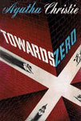
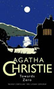
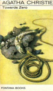
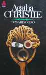

|
||
1944 - Towards Zero |
||
Lady Tressilian invites her ward for his annual visit at Gull's Point. He insists on bringing both his former wife and his present wife, though Lady Tressilian finds this awkward. Her old friend Treves dies, then she is murdered as well; Superintendent Battle and his nephew are called in. The book is the last to feature Superintendent Battle. The novel was well received at publication, noted for the well-developed characters. A later review called it "superb as to the plot", noting also how well the novel depicted the gentlemanly behaviour expected at the main tennis tournament in 1944. |
||
    |
||
Screen Versions |
||
In 1995, a film adaptation lost its support from Agatha Christie's estate. When Rosalind Hicks, Christie's daughter and controller of her estate, reviewed the script, with such issues as incest in the script, she ordered that the name of the film be changed as well as the names of the characters. The film became Innocent Lies and was met with mediocre success. In 2007, French filmmakers adapted the novel, which was titled (in French) as L'Heure Zéro. In 2007, the novel was adapted as part of the third season of the Agatha Christie's Marple television series produced by ITV. Geraldine McEwan played Miss Marple. The original novel did not include Miss Marple; other characters are changed as well for this adaptation to fit the series approach. Superintendent Battle is replaced by Superintendent Mallard played by Alan Davies. |
||
 |
||
2008 |
||
Miss Marple |
- |
Geraldine McEwan |
Thomas Royde |
- |
Julian Sands |
Kay Strange |
- |
Zoë Tapper |
Ted Latimer |
- |
Paul Nicholls |
Nevile Strange |
- |
Greg Wise |
Audrey Strange |
- |
Saffron Burrows |
Mary Aldin |
- |
Julie Graham |
Frederick Treves |
- |
Tom Baker |
Lady Tressilian |
- |
Eileen Atkins |
Merrick |
- |
Greg Rusedski |
Mrs. Rogers |
- |
Wendy Nottingham |
Barrett |
- |
Amelda Brown |
Hurstall |
- |
Peter Symonds |
Diana |
- |
Eleanor Turner-Moss |
Dr. Lazenby |
- |
Guy Williams |
Alice |
- |
Jo Woodcock |
Superintendent Mallard |
- |
Alan Davies |
Tipping |
- |
Ben Meyjes |
Jones |
- |
Thomas Arnold |
P.C. Williams |
- |
Stewart Bewley |
George |
- |
Mike Burnside |
Directors |
- |
David Grindley & Nicolas Winding Refn |
Screenplay |
- |
Kevin Elyot |
 |
||